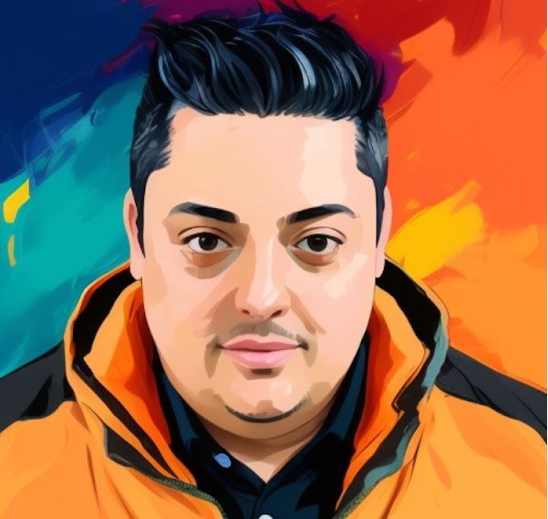

Sobre mim

Profissional de tecnologia com formação em Sistemas de Informação e sólida experiência em suporte técnico, implantação de sistemas e relacionamento com clientes. Possuo perfil analítico, foco em resultados e facilidade para trabalhar em equipes multidisciplinares, sempre garantindo a qualidade do atendimento e a satisfação dos usuários.
Atuei em empresas de tecnologia com ênfase em soluções fiscais, implantação de software e suporte remoto, onde desenvolvi competência para priorizar demandas, identificar oportunidades de melhoria e aplicar processos de forma clara e eficiente.
Sou reconhecido pela postura responsável, pela comunicação direta e pelo compromisso em entregar soluções consistentes. Busco constantemente aprimorar habilidades técnicas e interpessoais, contribuindo para ambientes de trabalho colaborativos e orientados à melhoria contínua.
Formação acadêmica
Especialização em Programação para Dispositivos Móveis · Universidade Tecnológica Federal do Paraná
Desenvolvimento de competências em criação de aplicações mobile, interfaces responsivas e integração de soluções, com foco em experiência do usuário e produtividade em projetos ágeis.
MBA em Desenvolvimento de Software Web · Universidade Paulista
jan de 2016 – dez de 2016
Formação voltada à arquitetura e práticas de desenvolvimento web, com ênfase em gestão de projetos, qualidade de software e adaptação de soluções às necessidades do negócio.
Bacharel em Sistemas de Informação · Universidade Paulista
fev de 2011 – dez de 2015
Base sólida em análise de sistemas, processos de TI e soluções empresariais, com participação em atividades complementares, trabalhos de curso e desenvolvimento de pensamento crítico.
Qualificação Administrativa · Escola Técnica Federal de São Paulo
abr de 2000 – mar de 2001
Capacitação em administração com foco em organização, documentação e práticas de gestão, reforçando habilidades de suporte administrativo e gestão de rotinas.
Experiência profissional
Analista de Suporte de Sistemas · DBFrete Sistemas
Joinville, Santa Catarina, Brasil · Remoto
Atuação em empresa especializada em soluções tecnológicas para o transporte rodoviário, com foco em sistemas fiscais, controle de frota e gestão financeira. Responsável por suporte técnico humanizado, priorização ágil de demandas e acompanhamento do cliente até a plena utilização das soluções, sempre com foco em satisfação, retenção e melhoria contínua.
- Implantação de sistemas voltados para transportadoras, incluindo módulos de CT-e, MDF-e, CIOT, Vale Pedágio, GNRE e controle financeiro.
- Atendimento técnico via WhatsApp e suporte remoto (TeamViewer, AnyDesk e KHelpDesk) com foco em agilidade e resolução eficaz.
- Configuração de integrações com plataformas de envio automático de boletos, faturas e arquivos XML/PDF.
- Parametrização de tabelas de preços, etiquetas de embarque e fluxos operacionais personalizados conforme demanda do cliente.
- Elaboração de documentação técnica e apoio na evolução contínua do sistema com base no feedback dos usuários.
Analista de Implantação · PWI Sistemas
São Paulo, Brasil · Remoto
Experiência no segmento de óticas e controle de acesso, atendendo desde o primeiro contato até a entrega completa do projeto. Trabalhei com implantação remota, instalação de equipamentos e treinamentos, fortalecendo a comunicação com clientes e a qualidade da entrega por meio de processos claros e documentação precisa.
- Atendimento inicial ao cliente, agendamento de instalação e condução de treinamentos.
- Implantação remota de sistemas conforme escopo contratado.
- Instalação e configuração de equipamentos: SAT, MFe-CE, NFC-e, mini impressoras (USB/rede), impressoras A4 e de etiquetas.
- Ativação de dispositivos fiscais, vinculação ao CNPJ do cliente e integração ao sistema.
- Configuração de certificados digitais (modelos A1, Token e Cartão com leitor).
- Compartilhamento de dispositivos via rede e ajustes técnicos no ambiente do cliente.
- Correções e manutenção em banco de dados via SQL (alterações, consultas, inserções e exclusões).
- Parametrização de sistema operacional e antivírus para garantir compatibilidade e desempenho.
- Personalização de etiquetas e ajustes visuais conforme demanda do cliente.
- Elaboração de documentação técnica de cada projeto e publicação na Wiki interna.
- Aplicação de treinamentos nos módulos do sistema (Cadastro, Financeiro, Relatórios, PDV) via Microsoft Teams.
- Gravação e disponibilização dos treinamentos para consulta posterior dos clientes.
Analista de Suporte Técnico · Futura Sistemas
São Paulo
Responsável por implantar soluções tecnológicas, prestar suporte técnico especializado e apoiar no fechamento de novos contratos. Atuação estratégica na apresentação de sistemas, alinhamento com clientes e condução de negociações que reforçaram a confiança e a adoção das soluções propostas.
- Instalação e configuração de equipamentos como SAT, MFe-CE, NFC-e, mini impressoras (USB/rede), impressoras A4 e de etiquetas.
- Configuração e ativação de certificados digitais (modelos A1, Token e Cartão com leitor).
- Vinculação de dispositivos fiscais ao CNPJ do cliente e ativação no sistema.
- Parametrização de etiquetas personalizadas para produtos e vestuário.
- Treinamento completo dos usuários em todos os módulos do sistema.
- Ajustes no sistema operacional e antivírus para garantir compatibilidade e desempenho.
- Elaboração de Nota de Importação e espelho de nota fiscal.
- Atendimento presencial e remoto, com foco na agilidade, clareza e excelência no suporte.
Analista de Suporte Junior · Matrix Internet
São Paulo · No local
Atendimento multicanal com foco em resolução rápida e atendimento de qualidade, utilizando plataforma de tickets para gestão de chamados. Atuei diretamente com clientes em serviços de e-mail, conectividade, hospedagem e DNS, priorizando clareza na comunicação e solução eficiente de problemas.
- Configuração de contas de e-mail em gerenciadores como Outlook e dispositivos iPhone.
- Diagnóstico e resolução de problemas de conectividade e acesso a serviços online.
- Testes de autenticação e conectividade utilizando ferramentas como PUTTY, Ping e Telnet.
- Suporte na configuração de DNS e gerenciamento de registros de domínio.